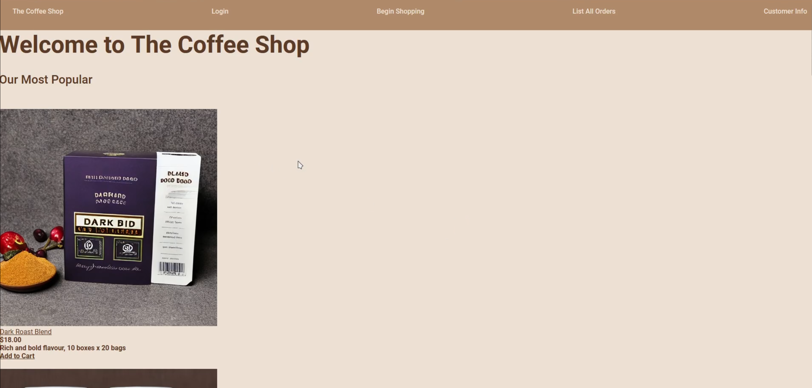
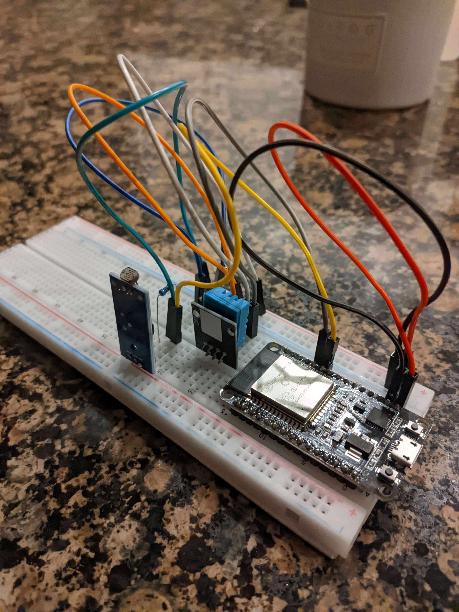
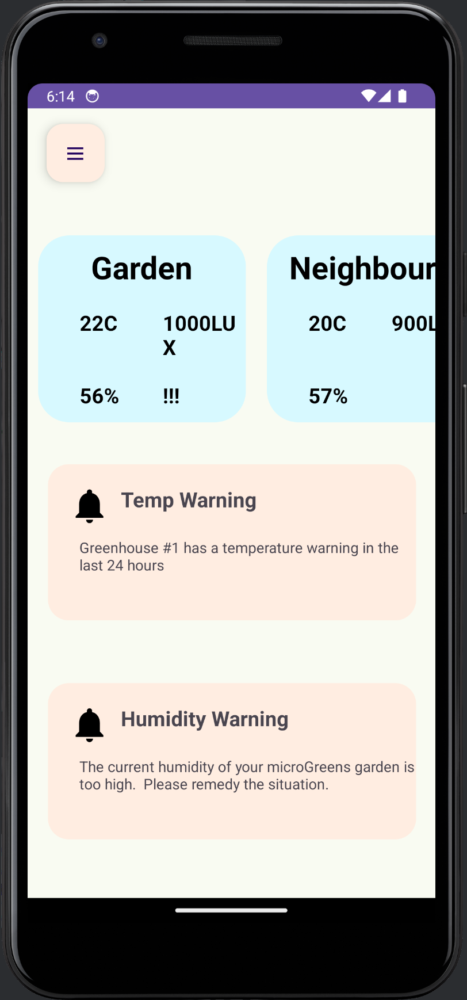

Projects
The Coffee Shop
The coffee shop was a project for my database course at UBC. I was awarded a medal for it as it was one of the best projects in the class.
It uses JSP to browse a amazon style website where users can sign up for accounts, browse products, and purchase them. The website even recommends
products for you based on previous purchases, so if you buy dark roast coffee's it will recommend other dark roast coffee's. While it looks a little rough it
was meant to be a proof of concept for a database project and does not follow a high fidelity design sheet.


Github Repo
Bluehouse ESP device
Bluehouse is the culmination of a project I have been planning for a while. Blue house is meant to interact with an ESP32 that can read environment data and
power a motor to pump water into a plant. The ESP32 is connected to a webserver throught hardwareID, that can be accessed from anywhere in the world.
The webserver is hosted on google firebase.

Github Repo
Bluehouse App prototype
Building the Bluehouse app prototype was made into part of a group project because my group liked the idea, as it was already something I was building in my freetime.
I was our project champion for the project and was responsible for the app prototype. The app prototype was built using Java and XML, and demonstrates the basic functionality of the app with minimal backend.
This project was managed by me and team communications were done through the public GitHub and Slack. I faced many challenges with this project, but I am proud of the work I did and what potential I was able to extract from my group mates.
This project is currently being reworked by me, as I would like to remake certain parts that did not fit our design document, and I would like to add more functionality to the app.

Github Repo